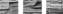

2012

В.
Коричнево-жёлтый камень и выцветшая лазурь.
Колодец. Рядом шатёр, выгоревший и рваный.
Но это всё
же защита от солнца и пыльных бурь.
За́ год раз
или два приходят сюда караваны.
Струится
горячий воздух и создаёт миражи,
и не понять – что зрения, что памяти порожденье.
То встают
городские высокие этажи,
то озеро в камышах, то поездов движенье.
А иногда
появляется даже морской простор,
береговой маяк, гаснущий рано утром…
И снова
молчащие камни, колодец и рядом шатёр,
в котором только кошма да кое-какая утварь.
Смотрю в
пустынное небо. Боже правый, скажи:
так происходит у всех или бывает иначе?
На старости
лет остаются камни и миражи –
и шатёр на двоих, но лишь при большой удаче.
Март 2013
Какой-то
мост в соседстве с телебашней,
и по мосту трамвай ползёт вчерашний –
я еду в нём неведомо куда.
Ещё людей
два или три всего-то,
поскольку ночь. И властвует зевота.
И стёкла все
в напластованьях льда.
Но вот
скажи: зачем былое снится?
Когда доеду,
это прояснится,
однако же доехать мудрено:
нет объявлений в грохоте железном,
и некого спросить, и бесполезно
глядеть в оледеневшее окно.
Я мёрзну в
этом прицепном вагоне –
не прячусь, не спасаюсь от погони –
я просто еду, продолжаю путь,
в котором нами управляют рельсы:
ни выйти где попало и пригреться,
ни постоять в раздумье, ни свернуть.
Но вот
скажи: зачем былое снится?
Не чую ног,
застыла поясница,
пустой вагон и голова пуста…
Не воскрешаю
давние невзгоды,
но веют лютым холодом сквозь годы
знакомо-незнакомые места.
Январь 2012
ЭТОТ ГОРОД
Этот город
был уютно небольшим;
по-над крышами зимой стелился дым,
во дворах цвели деревья по весне,
и кварталы утопали в белизне.
Лето с
осенью манили на причал,
глухо яблоки стучали по ночам,
и антоновкой пропахли закрома,
а вблизи опять маячила зима.
В этом
городе я не был сорок лет,
и не помнил, и не слал ему привет.
Но недавно
мне приснился странный сон –
будто нынче он стоит незаселён,
будто жители покинули его –
все ушли, не объясняя ничего,
и пустые замолчавшие дома
распахнули мне пустые закрома.
Этот город,
и живой, и неживой,
зарастает постепенно трын-травой,
лишь деревья одичавшие цветут,
только яблок никому не нужно тут.
И решил я
поселиться в городке,
но приехал, к сожаленью, налегке –
ни провизии, ни спичек, ни ножа, –
и хожу весь день, по улицам кружа.
В этом
городе я не был сорок лет –
не найти мне даже крохотных примет
из того, что составляло мой уклад, –
да и я ли это сорок лет назад
на причале в одиночестве сидел,
на теченье глядя, медленно седел,
а в соседстве плыл старинный пароход –
тот, который и сейчас ещё плывёт?..
Февраль 2012
В шляпе, с
книгой в руках, при бутафорской шпаге –
каслинского литья стилизованный Дон Кихот.
Думать о
рыцарском слове, достоинстве и отваге
при виде его, похоже, и в голову не придёт.
Он просто
стоит, задумавшись, не очень-то различая,
что у него под ногами – брусчатка или пески.
Тень легла
по соседству – то ли от тучки случайной,
то ли крылами машут старые ветряки.
Он стоит и
читает, невозмутимый и кроткий,
но если срочная помощь понадобится кому,
он влезет в чужое дело острой своей бородкой,
не очень-то размышляя, что это даст ему.
Он будет в
суде свидетелем, он подпишет бумагу,
кожей чувствуя разницу между добром и злом,
и если надо, он вытащит бутафорскую шпагу
и бросится на обидчика, в руках которого – лом.
Выглядит он
нелепо, чтоб не сказать, что глупо,
по мнению тех, кто умеет оценивать и считать.
Он не
получит за подвиги даже тарелки супа,
и на голову в шляпе не снизойдёт благодать.
Года и
столетья мчатся, соединяясь в эпохи,
и каждая, что естественно, своим героем горда.
А он, с
бутафорской шпагой, стоит у меня на полке,
и душу мою царапает что-то вроде стыда…
Февраль 2012
НАДЕЖДЕ
МАЛЬЦЕВОЙ
по случаю выхода в
свет
её книги стихов
«Навязчивый мотив»
Прочитать
эту книгу – почувствовать горечь сплошную:
дремлет память моя, да и совесть, пригретая, спит.
Прочитать
эту книгу – почувствовать силу иную,
словно после кагора хлебнуть неразбавленный спирт.
Да не просто
хлебнуть, а принять, и не
меньше стакана –
так, что в горле горит и сейчас же в желудке горит.
Никому не
дано воссоздать изверженье вулкана,
но застывшая лава сама за себя говорит.
Я не знаю,
кому удалось так естественно прежде
совместить красоту, неприглядность, отчаянье, честь…
Прочитать
эту книгу, прожить – и поверить
надежде,
что о времени ломки свидетельство верное есть.
Февраль 2012
ВОСПОМИНАНИЕ
О КОНЦЕРТЕ
В.
Сквозь
начальную разноголосицу
в ритме вальса мелодия просится,
но слышна тактов шесть или пять –
и печально смолкает, недужная,
и сквозь трубные хрипы натужные
как-то вдруг возникает опять.
Это струнных
с роялем создание,
это тонкой натуры сознание –
вальс изысканный, вальс кружевной.
Но звучит он
минуту, не более,
а затем дирижёрскою волею
этой теме не быть основной.
Основную
ведут небездарные
духовые, а также ударные,
имитируя воинский строй.
Ударения
свыше проставлены:
из-под груза тромбонов с литаврами
вальс доносится только порой.
И кончается
действо звучащее,
словно шли-пробиралися чащею
и пришли неизвестно куда.
И останется
путь непроверенный –
вальс, в блужданиях этих утерянный,
так и не прозвучавший тогда…
Февраль 2012
Вот
прозвучал свисток протяжно и непреклонно,
и ощущенье потери стало ещё сильней.
Дрогнула
платформа и поехала вдоль вагона,
и станционное здание поехало вместе с ней.
Меня всегда
занимала иллюзия эта простая,
которая длится, покуда поезд берёт разгон.
Но вот
застучали колёса, стыки рельсов считая,
и стал негромко поскрипывать и качаться вагон.
Так всё-таки
почему же ощущенье потери?
Бывает, что
нас тревожит и сущая ерунда.
Остановился
поезд, и распахнулись двери;
я здесь побывал – и больше не вернусь никогда.
Для такого
решенья не нужно особой воли,
и я заранее принял местное забытьё.
Тогда откуда
оно, ощущенье саднящей боли?
Это была
вселенная, а я покинул её.
Февраль 2012
Ефиму Пищанскому
Вот наши
улицы давнишние –
строенья сплошь одноэтажные,
и мостовые тут булыжные,
и пацаны на них отважные.
Вот наши
улицы давнишние
с ползущими по ним телегами,
где мы, считая обувь лишнею,
и в жаркий день, и в дождик бегали.
Вот наши
улицы давнишние,
их угощенья небогатые –
под яблонями или вишнями
сереют столики дощатые.
Вот наши
улицы давнишние
с черёмухами и сараями –
не то чтоб
совершенно нищие,
но в этом веке презираемы.
…Вот в
Интернете снимки старые,
помятые и пожелтевшие –
как будто выдумки бездарные
про наши годы улетевшие…
Март 2012
Когда уходят
на войну, с любимыми прощаются,
надеясь всё же, что придут к единственным своим.
Они не
знают, что с войны никто не возвращается,
что не вернётся даже тот, кто цел и невредим.
Убитые лежат
в земле, а близко ли, далече ли,
уж это как кому пришлось – командует война.
А те, что
ранены в бою, и те, что покалечены,
не те, что были до того, как началась она.
И даже те,
кому везло под пулями и бомбами,
своей израненной душой остались на войне:
они отныне никогда не будут беззаботными,
Господню заповедь презрев не по своей вине.
Уходят люди
на войну с мечтой о возвращении,
но возвращенье не сулит свободы от войны,
и даже старость не даёт покоя и прощения,
и только смерть уводит их в ладони тишины…
Март 2012
В СТАРОМ
ЗАМКЕ
В старом
замке, где Байрон бывал
(что в истории – важная веха)
раньше был знаменитый подвал:
жило в нём шестикратное эхо.
Стены, слыша
короткое «да!»,
«да-да-да! да-да-да!» отвечали.
Привозили
туристов сюда,
и они восхищённо молчали.
Но с годами
подвал обветшал,
всюду плесень, на рустике щели.
И вот тут
мажордом оплошал:
нанял тех, что не много хотели.
Мажордом,
безусловно, не мот
и вникал в ремесло и в детали.
В общем,
сделали нужный ремонт,
всё почистили и залатали.
Реставрирован старый комод,
новой кожей обтянуты кресла…
Мажордом,
безусловно, не мот;
всё в порядке, но эхо – исчезло.
Вновь открыт
знаменитый подвал,
в нём ансамбли звучат и солисты.
И туристов,
как прежде, внавал,
и объёмы его голосисты.
Что же вышло
– добро или зло?
Обновленье
всегда ли отрадно?
Замок – вот
он, а чудо ушло
и уже не вернётся обратно.
Март 2012
Много лет
зажигает субботние свечи жена,
хоть к другим ритуалам относится вовсе не строго.
Может, в
действии этом её ощущение Бога,
может, как-то по-своему слышит Веленье она.
В этой
точке, наверное, как-то всё вместе сошлось –
предыдущая жизнь, где лишили нас Божьего слова,
и вторая попытка: она хороша, но сурова, –
и уже ничего не изменят ни жалость, ни злость.
Поначалу
казалось – обрыв, обнищанье, обвал!
Но вросли
постепенно, и каждый достоинство нажил.
И субботние
свечи – как знак принадлежности нашей
к этой жаркой земле и к судьбе, что Господь даровал.
Март 2012
Если палые
листья печально шуршат под ногами,
если краски окрестные в жёлто-коричневой гамме,
если стали багряными старые клёны у дома –
значит, осень пришла: это жизни былой аксиома.
Но с
разломом эпохи раздвинулись мира границы,
и земля появилась, где выпало нам поселиться,
и она оказалась горячей и вечнозелёной –
в ней не действуют правила той аксиомы сезонной.
Где тут
палые листья? Ну разве на северных склонах…
Но соседняя
улица в странных разлапистых клёнах.
Месяц март,
и окрестность на яркой цветной панораме,
а кленовые листья печально шуршат под ногами.
Отошли
холода, отшумели дожди проливные,
и легли на асфальт пожелтевшие листья резные,
и похоже, что я повстречался с осенней весною…
Что
случилось в природе? И что происходит со мною?
Март 2012
МАСТЕР
Удалось это
действо сберечь
в детской памяти, всё-таки тленной, –
как печник перекладывал печь
в нашей комнате послевоенной.
Поначалу он
печь разобрал
по кирпичику – так аккуратно,
что, случись неразумный аврал,
он её возвратил бы обратно.
А потом он
доставил шамот
и какую-то редкую глину
и полдня выводил дымоход –
только руки я видел и спину.
А потом он
присел у стола,
постелил небольшую тряпицу
и поел, что жена собрала,
не забыв перед тем покреститься.
И, годящийся
маме в отцы,
небольшой, коренастый и сивый,
кирпичи, а затем изразцы
вновь укладывал неторопливо.
А потом, нам
огнём услужив,
улыбнулся: – Запомните сразу:
это мастер Киянов сложил –
значит, будет гудеть без отказу!
И ушёл,
растворился вдали,
наши души неся на ладони,
взяв совсем небольшие рубли –
а
больших-то и не было в доме.
…Память
снова уткнулась во мрак –
в том году мне исполнилось девять…
Жаль, всё
меньше нужды в мастерах:
в нашем хайтеке что же им делать?
Апрель 2012
Я шёл по
берегу реки
почти у самого у края,
в рюкзак походный собирая
моей дороги маячки:
где камешек, а где листок,
а то и грушу-дичку с ветки,
чтоб дома, как герой разведки,
весь долгий путь означить смог.
Вот так я
шёл и думал так
в понятиях игры военной,
и незаметно, постепенно
стал неподъёмен мой рюкзак.
И я тогда
построил плот –
нет, плотик – так вернее даже,
и вот рюкзак со всей поклажей
вниз по течению плывёт.
А я по
берегу реки
иду с верёвкой на запястье,
и мне приносит чувство власти
одно движение руки.
Я это
чувство берегу,
оно – подобие закона:
днём тихо обхожу препоны,
а ночью – плот на берегу.
Но вот в
глухую ночь одну,
когда в траве я спал устало,
волна под
плотик набежала,
и он уплыл на быстрину.
И всё, что я
собрал в пути, –
неважно, мало или много, –
и даже повторив дорогу,
уже вторично не найти.
Но и не в
том печали знак,
что мой рюкзак владельца сменит,
а что находку не оценит
тот, кто получит мой рюкзак.
Откуда бы
понять ему,
что в этих камешках и ветках
весь Божий мир в его расцветках
и погружениях во тьму?!
Апрель 2012
Престранная,
однако, книга:
загадочная в ней интрига,
и то, что делает герой,
невразумительно порой.
Вот он
влюбился и женился,
но перед бытом не склонился,
и он уходит от жены,
а мы сочувствовать должны.
И то же
самое в работе:
герой в успехах и в почёте,
но он презрел карьерный рост
и оставляет важный пост.
Опять
вопросы без ответа,
и вот по
прихоти сюжета
он покидает отчий дом
и поселяется в другом.
И это всё –
не для забавы:
там новы и язык, и нравы,
но в ситуации любой
он чувствует себя – собой.
По меркам
века, жизнь такая
проходит, нас не увлекая,
но человек прожил её,
храня достоинство своё.
Престранная,
однако, книга:
не вызвала в сознанье сдвига,
но вот саднит на глубине,
что жаль, она не обо мне…
Апрель 2012
Любой
словарь заведомо не полон,
жизнь приближённо отражает он.
Когда над
степью кружит чёрный ворон,
верней, чем плен,
промолвится полон.
Слова
приходят и слова уходят,
и это происходит неспроста –
на свежеперепаханных угодьях
так высевают новые сорта,
а рядом, на заброшенном погосте,
по-прежнему цветёт разрыв-трава…
Слова живут,
друг к другу ходят в гости,
отстаивают вечные права
в людских судах и в болтовне с экрана,
в хмельных застольных спорах до зари
и попадают поздно или рано
в готовые к печати словари.
Но что-то
вытесняется оттуда,
чтоб этот компенсировать привар,
и вот слова приварок и
остуда
снабжаются пометою устар.
И не разъять
словарь на половинки:
в той – будущее, в этой – забытьё.
И в той
найдутся старые новинки,
и в этой будет новое старьё.
И каждый раз
не обойти препоны,
и что-то на год, что-то на века.
Все словари
заведомо не полны,
и это жизнь живого языка.
Апрель 2012
Вроде б
недавно шуршала листва,
роща была в жёлто-красном наряде,
и багрецом отливали слова
в пахнущей дымом осенней тетради.
Но говорит
мне природа сама:
время ушло – оглянись и опомнись!
Это не осень
уже, а зима
пишет свою белоснежную повесть.
Что же
поделать – зима так зима!
Повода нет
озираться, тревожась.
Я ведь не
выжил ещё из ума,
чтобы оспаривать собственный возраст.
Но с
колоритом осенних осин
и с белизной заметённой долины
не сочетается здешний хамсин,
жгущий жарой пересушено-длинной.
До
позвоночника он прокалит,
и по душе мне сегодня, не скрою,
около дома большой эвкалипт,
вечнозелёный и с белой корою.
Апрель 2012
Долгий-долгий провал – а потом просыпаюсь рывком
в незнакомом жилище. В окне бледно-синее небо.
На столе
проявляются крынка с парным молоком
и краюха ржаного, с утра испечённого хлеба.
Мне, должно
быть, тринадцать, а может, четырнадцать лет.
Я впервые
один посреди украинского лета.
Почему в
незнакомой семье – мне известен ответ,
чем заполнится время – пока что не знаю ответа.
Есть
поблизости речка и роща поблизости есть;
есть, однако, и книга, что мама дала, провожая.
И, наверное,
в книге содержится вещая весть,
что из этих посевов мне следует ждать урожая.
Значит,
побоку речку, малину, орехи, грибы
и мальчишечьи игры, где я изначально не нужен.
Значит, надо
учиться угадывать знаки судьбы,
хлеб с парным молоком получая ещё и на ужин.
…Что-то
помнится ярко, а что-то ушло в забытьё,
но выходит на свет, если память опять озадачу,
и на старости лет неизменно богатство моё:
чёрный хлеб, молоко и хорошая книга в придачу.
Апрель 2012
ВОСПОМИНАНИЕ
О КУЗНЕЦЕ
Приятель мой
чуточку навеселе,
при том, как обычно, умел и проворен.
Он
мастер-кузнец в украинском селе,
ему подчиняются заступ и шкворень.
Чего
отковать? Поглядит, посвистит,
и всё образуется быстро и чётко:
и трактор починит, и плуг оснастит,
топор снарядит и печную решётку.
К нему
приходил я порой – посмотреть:
светился он весь, отбивая поковку.
Словами не
мог бы назвать я и треть
того, что ковал он искусно и ловко.
Серпы, и
подковы, и петли ворот,
тележные оси, крюки и мотыги –
да в общем-то всё, в чём нуждался народ,
глядевший в обыденность чаще, чем в книги.
Я знаю,
приятель, ты тоже не чтец
и даже немного бравируешь этим.
Я – сельский
учитель, ты – сельский кузнец;
мы светимся оба и, может быть, светим.
Да, я
подковать не умею коня,
и мне не даются ни гвоздь, ни подкова.
Но ты без
насмешки смотри на меня –
ведь кто-то же должен выковывать слово!..
Апрель 2012
На блаженных
нельзя обижаться
и блаженных нельзя обижать,
ибо блажь с ветряками сражаться
или блажь королю возражать –
хоть прекрасна она, но опасна
и чревата войной затяжной,
и тогда говорят не напрасно
не блаженный уже, а
блажной.
Но пускай
ветряки на покое
и пускай прославляем король –
на душе у блаженных такое,
что не скрыть никакою корой.
Говорят, что
обижены Богом,
говорят, что обласканы Им, –
всё едино: по этим дорогам
нам ходить не придётся одним.
Опыт их,
освящённый веками,
нам поможет – конечно, не всем –
иногда воевать с ветряками,
иногда их не видеть совсем.
Нет, не всё
превращается в числа,
и о том эта смутная речь,
что претензии здравого смысла
нужно выслушать – и пренебречь.
Апрель 2012
ПАМЯТИ
АРСЕНИЯ ТАРКОВСКОГО
Поэт
вернулся с фронта без ноги
и с неподъёмным грузом потрясений.
Война ему
талдычила: – Арсений,
ты эту память долго береги!
Но он-то
знал, что надобно беречь
малютку-жизнь, сейчас едва живую,
и для того на свете существует
свободная распахнутая речь,
в которой есть моря и города,
растенья, насекомые, планеты,
художники, артисты и поэты,
ну и, конечно, войны – иногда.
Он знал, что
надо говорить всерьёз
о тайне поэтического звука,
о музыке и об игрушках внука
и о причинах радостей и слёз.
Пусть
воплотится в точные слова
мир, полный чуда – и обыкновенный!
А что до
горькой памяти военной,
то пусть малютка подрастёт сперва.
Май 2012
…Шалаш, кожух, овечье
молоко.
Арсений Тарковский
Шалаш по
безразличию дыряв,
пока к дождю не заболели кости.
Зато в ночи
ко мне приходят в гости
скопленья звёзд и ароматы трав.
Чабрец,
полынь, шалфей и зверобой,
Арктур
багровый с Вегой голубой –
и станет сочетание такое
опорой для душевного покоя.
Кожух
доступен и необходим,
и славно, что тяжёлый он и старый.
Когда молчат
уснувшие отары
и от костра остался только дым,
так хорошо вздремнуть под кожухом,
не вспоминать о горьком и плохом.
Ночной степи
знобящая прохлада
не помешает постиженью лада.
Овечье
молоко, овечий сыр
на завтрак, а на ужин простокваша,
а в час обеда то кулеш, то каша –
и все заботы, и устойчив мир.
А ежели
хватает молока,
жизнь хороша, пускай и нелегка.
Я в шалаше
под кожухом улягусь,
и даже одиночество не в тягость.
Гляжу в
просвет, вдыхаю аромат
степной травы, овечьей шерсти, дыма…
Я выгляжу,
наверно, нелюдимо
при свете дня – нестрижен, бородат.
Но кто б
меня сейчас увидел в рост:
ведь мысль моя гуляет между звёзд,
душа моя в аскезе неустанна,
а речь моя, как степь, благоуханна!..
Май 2012
ИЗ ДЕТСТВА
Тот серый
дом с охраной у подъезда
был явно отделён от всей округи,
но для меня в нём находилось место –
в квартире давней маминой подруги.
Там были
книги в застеклённых нишах
и все простенки отданы полотнам,
а я ходил в одёжке полунищей
и, сколько помню, был всегда голодным.
Я появлялся
в месяц раз, не чаще,
мне разрешали за стекло забраться,
и я блуждал в дремучей книжной чаще,
где мог и страха, и ума набраться.
Хозяин был
издательский начальник;
он снисходил до глупого мальчишки,
и в разговорах, для меня начальных,
я узнавал писателей и книжки.
Потом я был
к обеду приглашаем,
с приборами,
салфетками и прочим,
но в разговорах за едой и чаем
такой судьбы никто мне не пророчил.
И где-то
ближе ко второму лету,
мальчишескую душу беспокоя,
пришло сознанье, что в квартиру эту
я прихожу с протянутой рукою.
Я не нарушил
благочинных правил,
был вежлив до последнего мгновенья,
но, может быть, царапину оставил
загадкой своего исчезновенья.
Май 2012
Новый век
ускоряет разбег,
чтобы прежнего даже в помине
не осталось – как будто на мине
подорвался воинственный век.
Погляди,
обернувшись назад,
на останки давнишнего рая:
угли светятся там, догорая,
где был дом, и коровник, и сад.
Там построят
компьютер-завод,
рядом башни-жилища построят
и канал по соседству пророют
для морских отфильтрованных вод.
И в
заоблачной той высоте
будут люди сидеть в Интернете,
принимая послания эти
за богатства в своей нищете.
Кто бы
спорил, что вектор таков –
он в прогнозах весомых и точных.
Но останутся
в нескольких точках
резервации для чудаков:
дом у речки
и стол у окна
с пожелтевшей от времени книгой,
чай в саду, расстегаи с вязигой
и покой просветлённого сна…
К этим
будням нельзя приманить,
но, как тень, сожаленье тревожит,
что играющий в бисер не может
окружающий мир изменить.
Май 2012
В.
В тот день,
когда Господь привёл нас в зал,
где шёл Вампилов и скучали кресла,
негромкая мелодия воскресла,
которую ни с чем я не связал.
Я несомненно
знал её давно,
конкретностей припомнить не умея,
а вспоминалась древняя камея,
где два лица сливаются в одно.
Всё в этот
день происходило так,
что значимой была любая малость,
но только много позже оказалось:
весь этот день – один Господень знак.
Прогулка по
Бульварному кольцу,
в метро толпа прижала нас друг к другу,
и ощущенье, близкое к испугу,
что вот лицо приблизилось к лицу…
Май 2012
Всё, что
накоплено: туманы Подмосковья,
дождь в Кызылкумах, шпили Таллинна в грозе,
том Ходасевича весь год у изголовья
и в Цуге озеро в рассветной бирюзе,
родная мова, освоение иврита,
старинный Львов и возрождённый Роттердам –
чтоб это не было утеряно-забыто,
всё, что накоплено, кому я передам?
Душа, и
память, и судьбы хитросплетенья,
родные лица, фотографии друзей,
событья чёткие и смазанные тенью –
кто разберётся в неразобранности всей?
И первой
книги долгожданные страницы,
и тель-авивский аплодирующий зал…
Стихи
останутся – всё это сохранится.
Стихи
останутся? Да кто тебе сказал?!
Май 2012
Я завидую
тем, кто по жизни проходит легко,
не боясь ошибиться и прежних ошибок не помня.
Мне же нужно
всегда и вперёд заглянуть далеко,
и в былое всмотреться, себя сожалением полня.
Я завидую
тем, кто всегда громогласен и прав,
разузнав, что почём и где это сегодня в продаже.
Я же,
сколько живу, за собою не чувствую прав
ни кого-то учить, ни кому-то советовать даже.
Я завидую
тем, кто с печалью души незнаком,
кто берёт всё подряд, от восторга совсем не немея.
Я же,
сколько живу, ощущаю себя должником,
а кому задолжал – сам себе объяснить не умею…
Июнь 2012
В.
Городок у
реки, пропылённый, горячий и тесный;
час езды от него – и в коричневой гамме гряда…
Может, я и
хотел бы вернуться в киргизское детство,
только знаю давно: невозможно вернуться туда.
И загвоздка
не в том, что случиться должно совпаденье
места, времени, денег, здоровья – да что там считать?
А причина
одна – что прошедшее смотрится тенью:
было пять мне тогда, а сегодня мне семьдесят пять.
Жил потом я
в столицах, бывал в городах многолюдных,
вспоминая не часто о домиках возле реки,
потому что мечтать о потерянном рае нетрудно,
но земная рутина влачится мечтам вопреки.
Ну, приехал
бы как-то – а там посторонние люди,
нет ни дома, ни сада, а если и есть – не узнать,
яблок детства не съесть, не проехать верхом на верблюде
и, к реке подойдя, за придумки себе попенять.
Но возможно,
что есть продолжение детства прямое
как подарок за память, прошедшую через года:
невысокий, зелёный, задумчивый город у моря;
час езды от него – и в коричневой гамме гряда…
На
подробностях детства не зря мы всю жизнь воспаряем:
хвори, голод, бездомность – а всё-таки радость ключом!
…Каждый
нынешний день безусловно не выглядит раем:
принимаю его, не жалея почти ни о чём.
Июнь 2012
В.
Запах пыли,
прибитой дождём,
аромат придорожной полыни…
Мы с тобою
куда-то идём
по просторной безлюдной равнине.
Пыль мягка,
шелковиста, тепла –
мы идём по
просёлку с рассвета.
Но какая
печаль повела
нас двоих в путешествие это?
Дом, где мы
родились и росли,
перестал быть надёжным жилищем.
По просёлку
шагая в пыли,
неужели другое мы ищем?
Ты и я –
никакая не знать,
и владения не было сроду,
но пора уже честно признать:
не относимся мы и к народу.
У соседа по
дому спроси –
скажет он, не нуждаясь в нажиме,
что везде на просторах Руси
нас обоих считают чужими.
Мы идём и не
знаем о том,
что однажды догадкой единой
в генной памяти выплывет дом
далеко за безлюдной равниной.
Сладко
пахнет прибитая пыль,
горько пахнет полынь при дороге…
Наших судеб
легенда и быль
помещается в Книге о Боге.
Июнь 2012
Никто не
заслоняет никого,
а если кто-то славой озабочен,
то стоит поразмыслить: отчего
один известен, а другой – не очень?
Не будем
сразу думать о плохом –
у Господа на то Свои причины:
и горный пик, и невысокий холм
при взгляде с неба равно различимы.
Но если
взгляд направить от земли,
пейзаж вокруг изменится непросто:
бугор поближе и гора вдали
покажутся сравнимыми по росту.
И шире, и
массивнее бугор,
на нём домишки, садики и грядки…
И что нам,
право, до далёких гор?
Господь их видит – значит, всё в порядке.
Июнь 2012
Дорога
длиною в жизнь – сравненье давно затаскано,
поэтому я намеренно точку зрения перевёртываю:
дорога длинна, как строчка из позднего Левитанского,
где ещё и рифма аукает через три строки на четвёртую.
Неизвестно,
куда придёшь, по этой дороге следуя,
зачарованный её звуками, пейзажами и движением.
При удаче
этот поход завершиться может победою,
но всё-таки вероятнее – очередным поражением.
Чаще
случается так: что-то где-то аукнулось,
послышалось, привиделось, и ты помчался за призраком…
А птица,
взлетевшая в небо, почему-то о землю стукнулась,
и это тоже аукнулось, но нехорошим признаком.
Конечно,
малоприятно птицу увидеть мёртвую –
как на себе ощутить ситуацию тупиковую.
Но рифма
опять аукает через три строки на четвёртую,
и вдруг тупик завершается найденною подковою.
Я подкову к
двери прилажу, сад возле дома вырастив,
через три строки на четвёртую тупики и завалы минуя.
Очень
надеюсь, что Господь будет по-прежнему милостив,
чтоб наполнилась мной строка – длинная-длинная-длинная…
Июль 2012
МИРАЖ С
ДОРОГОЙ
Дощатый
столик вкопан у дороги,
на нём вино и лёгкая закуска.
За ним
приятно подводить итоги –
и свежий дух, и смотрится не узко.
Я мимо
проходил и был окликнут:
– Садись к столу – есть место для поэта!
Мгновенна
радость, но восторги никнут:
мне не по чину приглашенье это.
Мне боязно:
тот, у торца присевший,
на Пушкина похож, а тот – на Блока,
а тот, в пенсне, ну точно Ходасевич…
Нет, звать
меня за этот стол – жестоко!
Но летний
день, но солнечные зайцы
сквозь листья на столешнице, на ликах…
И, право,
невозможно отказаться
хоть полчаса побыть среди великих.
А эти трое
наполняют рюмки,
а впрочем, и не рюмки, а стаканы,
и говорят их лица, взгляды, руки,
что эти посиделки им не странны.
И я уже от
обликов соседних
не замираю, как от грома свыше:
я принят в круг как младший собеседник;
пусть я молчу – но их так близко слышу!
И вот уже
участье принимаю
то жестами, то мимикой, то вздохом,
и всё почти, представьте, понимаю
в том разговоре лёгком, но высоком.
Проходят
полчаса, и я прощаюсь,
и вот я на своей дороге снова,
и сам себе, конечно, обещаюсь,
что никогда и никому ни слова!
Но вот беда
– стихи приходят сами,
на старости приходят, словно в детстве.
Поэзия в
соседстве с чудесами,
и я, причастный, тоже был в соседстве…
Июль 2012
Ночью
проснусь, оттого что услышу гудок.
Поезд у
станции? Судно на пристани дальней?
Словно бы
зов – непонятный, тревожный, печальный –
только таким ощутить и принять его мог.
Память о
юных, почти что о детских годах…
Слышал я
зов, но на отклик ещё не решался.
Всё же
решился – однажды с рассветом собрался,
из дому вышел с котомкой на слабых плечах.
И не
вернулся. Пошёл неизвестно куда,
слуху вверяясь, в пути собирая приметы:
птиц и
растения, еды, питьё и предметы,
реки и горы, селения и города.
Часто
казалось, что я заблудился в пути,
реже казалось, что вот он, искомый источник.
В этом
движении нет указателей точных –
их, полагаю, нигде на земле не найти.
Шёл я легко
и бывал нехороший ходок;
даже случалось, когда одолеет усталость,
зов умолкал, но надежда всегда оставалась:
ночью проснусь, оттого что услышу гудок.
Вот и
сегодня по-прежнему он не зачах –
ждёт меня поезд, и судно стоит у причала.
В окнах
светает. Я всё начинаю сначала,
с палкой в руке и с котомкой на слабых плечах.
Июль 2012
«НЕВИДИМЫЙ
ИДЕТ ПО ГОРОДУ»
Трофейный
фильм: понятно, не цветной,
но не сказать, что точно чёрно-белый, –
как будто оператор неумелый
его слегка приправил желтизной.
Осенний,
чуть подсвеченный бульвар,
площадка запоздалого трамвая,
где чемодан, внезапно оживая,
спускается рывком на тротуар
и далее по воздуху плывёт
к строенью, что виднеется за дымкой…
Мы вместе с
человеком-невидимкой
вершим
ночной по городу поход.
И тут
бессильны бедные слова,
быть невидимкой – и триумф, и мука:
легла к ногам сложнейшая наука,
но вопиют привычки естества.
Когда в
руках тяжёлый чемодан,
что толку быть невидимо-свободным?
Ты полагал,
что будешь беззаботным
и что тебе
особый жребий дан.
Но люди в
массе слепы и тупы,
довольно им и криков попугая,
и если ты споткнёшься, убегая,
тебя затопчут башмаки толпы.
Июль 2012
АРХИВНАЯ
БАЛЛАДА
В рутине
жизни и в кругу забот
он вовсе не был странен и нелеп:
он был простой конторский счетовод
и этим зарабатывал на хлеб,
и, утоляя все его печали,
костяшки счётов музыкой звучали.
И знали
только близкие его:
он был поэт, и вроде б неплохой,
но и они не видели его
сидящим и корпящим над строкой,
и даже близким неизвестно было,
когда всё это с ним происходило.
Писал он на
обратной стороне
бухгалтерских проводок или смет;
в нём уживались мирно и вполне
и счетовод, и вдумчивый поэт,
и только всё копились неуклонно
стихи в дешёвых папках из картона.
Потом он
умер, и его вдова,
ни у кого совета не спросив,
использовала попросту права
и отдала наследие в архив.
Там испытали
некое сомненье,
но, как ни странно, взяли на храненье.
Случилось
чудо, и остался след,
когда и для известных мало сил:
исследуя архив, другой поэт
почти навскидку имя запросил –
и был ошеломлён открытьем этим
(так попадаем в цель, когда не метим).
Он сам себя
в усильях превзошёл,
чтоб сделать гласным то, что он открыл:
в ущерб себе издателя нашёл,
на толстый том его уговорил.
И вышла
книга, и прошла реклама,
но критика, увы, была упряма.
Поехало-пошло: мол, прошлый век,
и темп не тот, и время не вернуть,
и даже грубо – прошлогодний снег,
истоптанный, давно избитый путь.
И вывод
беспощадный: эти трели
уже и в прошлом веке устарели.
И лишь один
провидец написал,
что автор был конторский счетовод,
но в этой книге – не музейный зал,
там почва и над нею небосвод,
и все ассигнования – по смете,
и книге уготовано бессмертье!
Он прав, и
даже прав наверняка,
но нужно прояснить один момент:
не слишком ли цепочка коротка?
Издатель,
спонсор, с ними рецензент –
и это всё? Печально и обидно:
писатель есть – читателя не видно…
Август 2012
ПОЭТ
Цикл стихотворений
памяти Георгия Шенгели
1.
Шлюпку
качает рассветный прибой,
шорох о гальку волны
набегающей,
и небосвод голубой-голубой,
вместе ласкающий и обжигающий.
Так и
пройдёт по грядущей судьбе
двойственность мира – с добром и утратами,
и не однажды случится тебе
видеть замену рассветов закатами.
Но ведь не
гонят нужда или плеть –
тут и пролив с маяками, и древности.
Можно
остаться – и вечно жалеть,
к жизни иной изнывая от ревности.
Сходят с
пера золотые слова,
голову кружат надеждами вешними…
Питер и
Харьков, Одесса, Москва –
как совместить их с рассветами здешними?
Воздух
солёный хоть сутками пей –
не запастись на дорогу далёкую.
Фанагория и
Пантикапей
усугубляют разлуку нелёгкую.
2.
Еврейские
мудрецы Экклезиаст и Спиноза
если тебе и близки, то не
затем, что евреи,
а просто засел в мозгу, словно в пятке заноза,
некий вопрос, на который ответить бы поскорее.
Вызванный
вечной болью, подобный вечному стону, –
а стон становится глуше, а боль становится злее, –
это вопрос, подчиняться ли неправедному закону
или с ним воевать, жизни в войне не жалея.
И что
сказали евреи на вопрошенье это?
Что ты узнал
для себя, мудрые книги читая?
А то они и
сказали: единого нет ответа –
закон Всевышнего свят, но ведь и жизнь – святая.
Ежели ты не
подонок и ежели не тупица,
рано ли, поздно поймёшь: людские законы – бумага.
Каждый сам
выбирает, чем готов поступиться,
а чем поступиться не может ни за какие блага.
Стерпи свою
одинокость, брезгливость от раболепья,
оцепененье от лжи, отчаянье от доноса.
Всё это уже
прошли в покрытые пылью столетья
еврейские мудрецы Экклезиаст и Спиноза.
Стерпи, и
будет всегда под потолком квартиры
небо, всему вопреки по-керченски голубое,
и будут в кромешной тьме вечны ориентиры:
закон, который внутри, и звёзды над головою.
3.
Ночь.
Дорога в степи. Только звёзды её освещают,
никакого сюрприза
проезжему не обещают:
если небо без туч, не поддайся тревоге и страху –
потихоньку езжай, доверяясь Чумацкому Шляху.
Под копыт
перестук и повозки негромкие скрипы
до тебя донесутся далёкие вздохи и всхлипы,
и проснётся в тебе камертонное эхо поэта,
чтобы стала словами степная акустика эта.
А тревожно –
тогда распрями подзатёкшие ноги,
у обочины стань, разведи костерок у дороги,
погляди на огонь, как не раз и не дважды мечталось,
вспомни пройденный путь и подумай о том, что осталось.
А осталось,
наверное, меньше, чем прожито ныне,
и похожа дорога в степи на дорогу в пустыне.
Никого ты не
встретишь с рассвета в пути до рассвета,
и придётся признать: в одинокости – сущность поэта.
Продолжай же
дорогу, улавливай всхлипы и вздохи –
в этом верность призванью и в этом же верность эпохе.
И на звёзды
смотри – а чего не увидишь в потёмках,
то прорежется после, в твоих отдалённых потомках.
4.
Где-то
у моря – в Одессе, а лучше в Керчи –
грустную трапезу юным
коку́ром приправишь,
сядешь читать, и над книгой уснёшь, и в ночи
будешь разбужен прозрачными звонами клавиш.
И осознаешь
отчётливо: сколько же лет
жил в суете, задыхаясь и мыкая горе,
в жизни надеясь оставить положенный след –
но ведь и шлюпка свой след оставляет на море!
Дальше
забвение – словно бы и не бывал;
так вот уснёшь, и однажды никто не разбудит…
Имя твоё
вытесняется в тёмный подвал,
два поколенья – а там и подвала не будет.
Но
поразмысли: есть море, любовь и стихи,
звуки рояля в ночи и на раннем рассвете.
Путь не
сложился? Так, значит, живи вопреки,
не подпуская к себе неприятности эти.
Значит,
по-прежнему шлюпку готовь и весло,
хлеба с собою, немного орехов и соли,
и вспоминай, что однажды зерно проросло –
то, что беглец обнаружил в дырявом камзоле.
5.
Едва
ль ты знал, что и в какой черёд,
единожды, а то и
многократно,
с тобой и со страной произойдёт, –
и вот стена, и нет пути обратно.
О стену лбом
– возможный вариант,
но есть иной – подкоп вести под стену,
употребив для этого талант
и тем не допустив ему измену.
Подкоп не
горделив, но и не прост
и не проделан случаю в угоду.
Нет, он не
для прогулок в полный рост,
но иногда выводит на свободу.
И не для
многих предназначен он,
а лишь для тех, кому необходимо
жить и хранить для будущих времён
то, без чего беда необратима.
Ты многое
уже предотвратил,
построив под стеной подобье свода.
Не нужен
динамит или тротил,
а только ежедневная работа.
Двух пишущих
машинок перестук
под сводом возникает постоянно,
и только этот безопасный звук
фиксирует дотошная охрана.
6.
Лист
за листом – и хоть бы интервал!
Лирической новеллой ты
назвал
текст, что зовут и маленькой поэмой.
Двойное имя
молодцу к лицу:
покуда приближаемся к концу,
взволнованы уже стихом и темой.
Сюжет,
конечно, действует на нас,
но во стократ сильнее – сам рассказ:
он сжат настолько, что дыханье сжалось!
Среди
немногих пауз и цезур
взмолиться бы, что нужен перекур,
но почему-то захлестнула жалость
к тому, что человек на свете жил,
к тому, что беден и затюкан был,
хотя всю жизнь трудился через силу,
не получил
от жизни ничего,
а тайну благородства своего,
как с нею жил, так и унёс в могилу.
И вправду
эта тайна велика –
её не разгадали за века,
тем более не разгадают ныне,
когда в почёте травля и навет
и никому, похоже, дела нет
до крика вопиющего в пустыне.
Не надо,
милый, попусту кричать;
пускай скуёт молчания печать
уста твои, чтоб от греха подальше.
Её со всем
стараньем возложи,
чтоб их сберечь от ежедневной лжи
и даже, по возможности, от фальши.
А если уж
молчать невмоготу,
то предпочтенье белому листу;
его хранить – обычнейшее дело:
вполне довольно ящика стола,
куда сейчас безропотно легла
очередная тихая новелла…
7.
История
базилевса, властителя византийского,
изложенная в пахучих,
вкусных, звучных стихах:
такие стихи не пишут, потом их в журналах тиская,
такие стихи не пишут внезапно и впопыхах.
Тут нужно
читать монографии и сопутствующие источники,
чтоб знать подробности быта, ритуалов и мест земли,
тут просто нужны детали, убедительные и точные:
что люди ели, носили, как говорить могли.
Но знания –
только фундамент, а главное – понимание,
что история человечества – одна единая нить,
что для отдельных особей власть – свирепая мания:
ни времени, ни пространству это не изменить.
А никакой
базилевс не обойдётся без повара,
без лекаря, без охранника, без брадобрея тож,
и если уж допечёт, вовсе не нужно сговора:
во всех временах и пространствах есть яд, и бритва, и нож.
Повар, врач,
парикмахер потом исчезнут в безвестности
или погибнут на месте – уж как кому суждено, –
ибо в любую эпоху в любом населённом месте
возможны лишь два исхода, третьего не дано.
Но есть ещё
подвиг поэта, к нашему времени близкого,
который, перед тираном превозмогая страх,
оставит
людям историю властителя византийского,
изложенную в пахучих, вкусных, звучных стихах.
Август 2012
Верно,
каждому встретиться с этим
хоть единожды, но суждено:
мы куда-то идём или едем
или попросту смотрим кино –
и внезапно кусочек природы,
что ни есть рядовой и простой,
схватит сердце – и многие годы
будем бредить картинкою той.
Повседневность в делах и заботах
впечатления наши дробит,
но однажды случается что-то:
остановит, смутит, зазнобит.
Небо,
солнце, трава и деревья,
речка, мост в огражденьях прямых –
всё даётся нам только на время,
на один пролетающий миг…
Август 2012
Среди ночи
проснувшись, я слышу:
кто-то ходит по нашей квартире.
Как вошёл
он? Ведь заперты двери! –
и становится
не по себе.
С ним боюсь
я знакомиться ближе,
оттого на ногах словно гири,
но при этом я всё-таки верю,
что не зря он случился в судьбе.
Вот он в
кухне хлебает водицу,
вот стоит у стола в кабинете;
слышу, даже бумаги листает –
что во тьме он увидит ночной?
Вот в
гостиной он в кресло садится;
как загадочны паузы эти,
и, должно, ни одна не пустая…
Вот он в
спальне навис надо мной.
Мне нетрудно
под пристальным взглядом
крепко спящим сейчас притвориться,
потому что мы оба на стыке,
где земной и придуманный мир.
А наутро
откопанным кладом
пред глазами предстанет страница,
совершенно внезапная в книге,
что зачитана мною до дыр.
Август 2012
В.
В давние
годы мечталось, как о почти незаконном:
вот на пенсию выйду – куплю себе дом с балконом,
поставленный одиноко на морском берегу;
времени ещё много – накоплю и смогу!
Домик будет
белёным, под черепичной крышей,
у прохладного моря с мелью, от солнца рыжей,
и я сижу на балконе с цейсом на ремешке,
с белым листом бумаги, с карандашом в руке.
Песок
золотистый, а небо – пепельно-голубое…
Хорошо
сочиняется под ворчанье прибоя!
Любимая
женщина рядом готовит к завтраку чай;
то, что в юности вымечтал, к старости получай.
Что же
сбылось – и что же исчезло в земном содоме?
Купил не
дом, а квартиру в семиэтажном доме.
Три четверти
года жара и с нею слепящий свет –
не посидишь на балконе, да и балкона нет.
Море
довольно близко, но не для пешего шага,
поэтому цейс не нужен, зато в избытке бумага,
карандаши и ручки на расстоянье руки.
Хорошо
сочиняется, возрасту вопреки!
Прожив три
четверти века, смотрю на путь за спиною:
чем Всевышний отметил моё пребыванье земное?
Любимая
женщина рядом, и безгранична власть
нежности и понимания – значит, мечта сбылась.
Август 2012
Не
возвратиться к дальним берегам,
в далёкий год, в придуманное лето.
Там поезд
шёл из Лисса в Зурбаган,
и я в нём был, но ехал без билета.
И вот, боясь
попасться на пути
придирчивым дорожным контролёрам,
решил на ближней станции сойти
и если дальше ехать – не на скором.
Визг
тормозов. Относит ветерок
дым из трубы. Смотрю, не узнавая.
Я вышел на
скрещении дорог,
и станция зовётся Узловая.
И говорит
разбуженный кассир,
лицом желтея на свету фонарном:
– Куда угодно – необъятен мир!
А денег нет
– попробуй на товарном.
Был берег
близок, а теперь далёк.
В теплушке
сено. Спится ароматно.
Я ехал
вдоль, а еду поперёк.
Вернусь ли
хоть когда-нибудь обратно?
И вот
промчалось много дней и лет,
и разных стран, и способов правленья…
Я заработал
денег на билет
в любой вагон любого направленья.
И снова
колея на берегу.
Весь антураж
переменился странно.
Названья
станций прочитать могу,
но нет ни Лисса тут, ни Зурбагана.
Электровоз,
который не дымит.
Купе в
интеллигентном разговоре.
И в сердце
что-то тихо так щемит.
И за окном
совсем иное море.
Август 2012
Мой портрет:
серьёзный взгляд,
блики светлые по коже…
На меня он
был похожим
тридцать лет тому назад.
Я, понятно,
стал седым,
и морщинистым, и лысым.
Изначально
недописан,
он остался молодым.
Как судьбы
моей фасад
в окруженье небогатом,
он смотрелся младшим братом
двадцать лет тому назад.
Я ушёл за
шестьдесят;
не подвержен годовщинам,
он смотрелся взрослым сыном
десять лет тому назад.
А теперь и
сходства нет –
лишь приметы
родовые,
и пришедший в дом впервые
даже
спросит: – Чей портрет?
Я отвечу: –
Полотно
требует воображенья:
там одно
изображенье,
но слоистое оно.
С ним пришли
ко мне домой
я, и сын, и
брат – на равных,
а, возможно,
там и правнук –
Ганнибала, а
не мой…
Сентябрь
2012
Птичье пенье
на рассвете, шум деревьев на закате,
перезвон ручья –
виртуозная соната Гайдна или же Скарлатти,
да не важно, чья!
Зал
концертный в полумраке, и звучание со сцены
удивляет нас:
эта музыка знакома, а сонату несомненно
слышим в первый раз.
Разберите на
фрагменты, ритмы, паузы измерьте,
а ответа нет.
Эти звуки с
нами рядом от рождения до смерти –
вот и весь секрет?
Если б всё
так просто было, то любой, познавший ноты,
так писать бы мог.
Но зачем-то
нужен гений, почему-то, отчего-то
нужен полубог!
Он впитает
гуды сосен, помолчит с лесною чащей,
небу надерзит,
и в короткую сонату мир звучащий и молчащий
он преобразит.
Сентябрь
2012
Вдоль улицы
желтеют фонари,
размытые сгустившимся туманом,
и смотрится пейзаж чужим и странным,
давным-давно знакомый изнутри.
И каждый
здешний дом, и каждый двор,
прохожие, машины и растенья
обзавелись особой светотенью,
которой ты не видел до сих пор.
В подъезды,
в переулки загляни –
людские тайны и кошачьи войны,
и по спине бежит озноб невольный:
тревожны и загадочны они.
Остановись,
подумай, посмотри,
сложи свои сомненья или вычти,
но что же есть обычней и привычней,
чем жёлтые в тумане фонари?
Хранит
пейзаж души твоей печать;
он может быть красивым, некрасивым,
но никаким на свете объективам
загадочность его не передать.
Сентябрь
2012
«О ЛЮБВИ»,
фильм режиссёра
Михаила Богина, 1970 г.
В.
Час
пятнадцать минут длится этот сюжет о любви.
Чёрно-белая
плёнка. Одна музыкальная тема.
Самый
минимум слов. Никаких откровенностей тела.
И глубинная
суть расхождения между людьми.
И слова, и
поступки логичны едва ли на треть.
Перекличка
историй, как будто не связанных вовсе.
Где колёса
событий и где их прозрачные оси?
Объяснений
не будет, и нужно не просто смотреть,
а стараться поймать доверительный трепет лица,
заглянуть попытаться в печально-глубокое око…
Эта женщина
будет скорее всего одинока,
если добрый Господь не поможет прозренью слепца.
Сентябрь
2012
Человек
стоит на берегу.
Человек
стоит и смотрит в море.
Он сегодня
сам с собою в споре,
словно в заколдованном кругу.
На песке
прибойном отчего
он стоит, притихший, неподвижный?
Ведь за
что-то выделил Всевышний
среди прочих именно его?
А теперь
приходится ему
с неразумной верою в удачу
и с тревожной совестью в придачу
молча разбираться самому.
Вот он и
стоит на берегу,
слухом весь развёрнутый к прибою,
внешне так владеющий собою,
а внутри – не пожелать врагу!..
Октябрь 2012
БАЛЛАДА О
ДОМЕ КНИГИ
Ночь на
улице – точно по классике: вот фонарь, а вот и аптека…
Я работал в
соседнем здании, там большая библиотека.
Весь этаж
занимала цокольный, много книг, и редкостных много;
отвечал я за сохранение и развитие каталога.
На втором
этаже – издательство, слева от центрального входа.
Я работал в
этом издательстве сорок лет и четыре года.
Был
редактором и корректором, иногда оформителем даже;
книги, через меня прошедшие, не задерживались в продаже.
А над нами
выше, на третьем, под покровом крыши двускатным,
был музей антикварной книги – я служил смотрителем штатным.
Букинисты со
мной дружили, антиквары со мной дружили,
поверяли друг другу тайны, и вот так мы полвека жили.
Но пока я
честно трудился и не делал себе карьеры,
старый дом обветшал изрядно, и нужны серьёзные меры.
И сказали
специалисты, осмотрев чердак и подвалы,
что ремонт, весьма запоздалый, будет стоить весьма немало.
Что дешевле
выстроить заново дом с пространством равновеликим,
где найдётся место издательству и старинным, и новым книгам,
где и залу для конференций, и концертному место найдётся, –
только вот на время строительства то, что есть, всё закрыть придётся.
Всё закрыли,
и дом сломали, а не строят: спонсоры в сваре.
Фонды
свезены́ на храненье на окраине в старом ангаре.
Что-то
сложено аккуратно, что-то сложено как попало.
Старики, на
меня похожие, охраняют, чтоб не пропало.
Молодые
порой проходят, молчаливо на нас глазея, –
те, что выросли без читальни, без издательства, без музея.
И едва ли
они откликнутся, если мы им контакт предложим, –
на одном языке разговариваем, а понять друг друга не сможем…
Октябрь 2012
Пожелтевшая
газета.
Снимок,
выцветший вполне.
Пятна
солнечного света
на полу и на стене.
Человек
лежит в постели.
Ноет каждый
позвонок.
Он не болен
в самом деле –
просто стар и одинок.
Состояние –
понятно,
настроенье – в лад ему:
бесят солнечные пятна
неизвестно почему.
А они по
книжным полкам
разбежались-разошлись,
освещая по осколкам
прежде целостную жизнь –
жизнь, которая дразнила,
жизнь, которая звала,
на бумагу и чернила
вся которая ушла.
Подступает,
вероятно,
жизни край…
А что же за?..
Бесят
солнечные пятна,
хоть повязку на глаза!
В тишине его
постельной
как не думать о судьбе?
Он лежит от
книг отдельно,
книги – сами по себе.
Их планида
непонятна,
не в его она руках.
Бесят
солнечные пятна
на неброских корешках.
Запоздала
эта пытка,
не ко времени она:
жизнь одна, а книг – с избытком.
Много книг, а жизнь – одна…
Ноябрь 2011
ФРАНЦ КАФКА
Диптих
ПРОЦЕСС
Неправый суд
тоталитарной власти?
А если это вовсе не о том?
А если этот
невысокий том
рассказывает о зубастой пасти,
распахнутой на каждого из нас
от самого рожденья и поныне,
и ни в
горах, ни в море, ни в пустыне
не спрятаться от наведённых глаз?
То смерти
пасть и то глаза её:
у каждого судилище своё,
свои допросы, пытки, протоколы,
свой горький смех и свой бессильный плач,
и свой безликий и немой палач,
наркоза запоздалые уколы…
ЗАМОК
Он призван в
за́мок, чтобы сделать дело.
Он
образован, честен и умён
и выполнит задание умело –
но к выполненью не допущен он.
Граф должен
дать на то распоряженье,
а без приказа в замок не войти.
И вот он
ждёт, и дело без движенья,
и все бумаги вязнут по пути.
Зачем они,
нелепые мученья?
Речь о
призванье, о предназначенье,
о полном безразличии людском.
У каждого
есть свой высокий замок,
но он доступен только для упрямых
и тех, кто пробирается тайком.
Ноябрь 2012
МАКС ФРИШ
Назову его
Гантенбайн, назову его Эндерлин,
Штиллер, Фабер и Бидерман, назову его как угодно!
Веря в силу
связанных слов, я дошёл до снежных вершин,
и героям книг имена я придумываю свободно.
Ибо пусть он
трижды хитёр, ибо пусть он трижды умён,
не избегнуть ему того, что записано в Книге Судеб.
Из живущих
здесь никому не дано нарушить закон –
подсудимые на земле, а Судья-то на́ небе судит.
Значит, имя
– совсем пустяк? Называй как хочешь себя,
хоть от близких людей таясь, хоть повсюду громко трубя,
хоть укрывшись в чужой стране – а судьбы своей не минуешь?
Да, похоже,
что это так. Но случается иногда,
что восходит имя в умах, как восходит в небе звезда, –
Моцарт, Рембрандт или Шекспир – этих не переименуешь…
Ноябрь 2012
За двадцать
лет попривыкли к здешней влажной жаре,
хотя организм по-прежнему ей радоваться не хочет,
и стала
почти рутинной ночная гроза в ноябре –
даже и спится лучше, когда за окном грохочет.
А днём за
тучами солнце, и как-то не по себе:
зренье за двадцать лет привыкло к яркому свету.
И чаще, чем
обычно, думаешь о судьбе,
которая стронула с места и повела по свету.
И вот
запоздалая осень или начало зимы –
всю ночь гремит за окном и ливень льёт что есть силы.
Белоснежную
зиму навек оставили мы,
и там же навек остались родительские могилы.
Это мы
потеряли, а что же приобрели?
В наших
душах взошло, двадцатилетье итожа,
неизвестное ранее чувство древней земли,
на которой не родились, но которая наша тоже.
Здесь не
были никогда ни дед и ни прадед мой;
глубже не загляну – во тьме фамильное древо.
Но дом без
меня пустовал, и я вернулся домой,
и сердце моё стучит в ритме его напева.
Ноябрь 2012
БАЛЛАДА О
ПОЕЗДЕ МЕТРО
(МОСКВА,
20-й ВЕК, ПОЛДЕНЬ)
В
семидесятые годы закатившегося столетья
несколько раз я слышал странные слухи эти:
поезд метро
с «Белорусской» отправился на «Динамо»;
никто и
подумать не мог, что с ним приключится драма.
Через три
минуты должна была быть остановка,
но нет остановки. Что делать? Вроде кричать неловко,
а поезд идёт, и в туннеле платформ никаких не видно.
Паниковать
пока что по этой причине стыдно,
но надо же что-то делать!
Десять
минут.
Двенадцать.
Уже и самые
выдержанные начали волноваться.
Кто-то
рванул стоп-краны – реакция неощутима.
Сверкнули
огни слепящие, но поезд пронёсся мимо.
Пятнадцать
минут.
И
двадцать.
И
наконец платформа.
На ней
шеренга людей, на них военная форма,
автоматы на шеях, в руках поводки овчарок.
Платформа
весьма просторна, свет на платформе ярок,
и звучит команда из потолочной тарелки:
– Всем
покинуть вагоны и на выход по стрелке!
Толпа
мгновенно затихла, лишь одиночные всхлипы
и чей-то охрипший голос: «Вот уж влипли, так влипли!»
И все
потянулись на выход, а там наверх эскалатор
такой высоты немыслимой, что ехать на нём страшновато.
А наверху –
кабинки, охранники смотрят хмуро,
и всю толпу ожидает личная процедура:
подписка о неразглашенье и полученье билета
от станции Химки в Москву,
и
ни одного ответа
на все вопросы людей, их страхи, недоуменье, –
как будто в зале царило полное онеменье.
И все
поставили подписи, и дальше всю жизнь молчали,
и ничего особенного в секрете не замечали,
словно бы всё происшествие – эта ячейка ада –
было таким естественным, что лучшего и не надо!..
Декабрь 2012
Из Польши,
России и более северных стран
осенней порою летят перелётные птицы,
чтоб около моря на тёплую землю спуститься
и здесь на полгода устроить заботливый стан.
И ранней
весною они возвратятся туда,
где будет чуть позже любовная песня пропета,
где будут кружить над гнездовьем всё доброе лето
и только под осень очнутся: опять холода!
А люди – не
птицы: уж если пришлось улететь
от холода жизни, её прозябанья и стужи, –
смиряй вожделенья, затягивай пояс потуже,
но вновь над тобой не засвищет морозная плеть.
Вернуться?
Куда? Где по-прежнему вьюга и лёд?
Вернуться? Куда? Где по-прежнему зябкая сырость?
Мы можем не
раз прогуляться в одеждах на вырост,
но только однажды даётся свободный полёт…
Декабрь 2012
В.
Мы с тобою
знакомы полвека;
я смотрю в молодые года –
вот она,
очевидная веха,
просто я был незрячим тогда.
Мы полвека
знакомы с тобою,
и дорога, что нас повела,
если стала нам общей судьбою,
то такой изначально была.
Мы полвека с
тобою знакомы;
дай нам Бог продолженье пути,
чтоб под крышею нашего дома
и до этого срока дойти.
Декабрь 2012
БАЛЛАДА О
ЖЁЛТОМ ПАКЕТЕ
Вестовой был
отправлен с особым пакетом;
все они отличались по срочности цветом –
самый срочный был жёлтый. И знал вестовой,
что за срок отвечает своей головой.
Вестовой был
отправлен из белого штаба:
штаб о флангах полка информирован слабо.
Потому-то и
послан был жёлтый пакет,
чтоб немедля в таком же доставить ответ.
Мчится конь.
Над пожарищем каркают птицы.
Справа виден
Хопёр, слева в дымке – Царицын.
Хоть весна,
но мужик и не помнит про сев.
И дорога
железная рядом совсем.
Прёт по ней
паровозик по кличке «кукушка»:
три вагона, платформа, там люди и пушка.
Паровозик
пыхтит, разгоняя разбег.
На
ступеньках вагона сидит человек.
Сам
защитного цвета на фоне зелёном,
плещет красный флажок над зелёным вагоном.
Трубку курит спокойно – хозяин судьбы!
Чёрный чуб
на ветру. Чёрный дым из трубы.
Вестовой
размышляет: «Составчик-то странный –
видно, важная птица с такою охраной.
Вот бы
шлёпнуть его, расстоянье – пустяк!
Только
жёлтый пакет… невозможно никак».
…Двадцать
лет пронесутся. В промёрзлом бараке
управдел наркомата припомнит во мраке
и пропустит в больные тревожные сны
этот солнечный день подзабытой весны –
как скакал он утоптанным шляхом прогретым:
конь –
красавец-дончак, сумка с жёлтым пакетом,
на спине карабин, в кобуре пистолет…
Эх, когда бы
тогда да не жёлтый пакет!
Был бы
выстрел-другой, и при лёгкой удаче
вся история мира пошла бы иначе!..
Шесть утра.
И скупой зарешёченный свет.
И в ночи
растворяется жёлтый пакет.
Декабрь 2012
БАЛЛАДА О
ЗАБОЛЕВШЕМ ВРАЧЕ
Все
разъехались – остался он один,
средних лет немногословный господин:
нос крючком, на нём очки, высокий лоб,
старомодный деревянный стетоскоп,
для рецептов подзаконная печать
да привычка днём и ночью поспешать.
Кто в
Баварию, кто в Гамбург и Берлин, –
все разъехались, остался он один.
Все уехали,
кто этого хотел;
городок в теченье года опустел –
стало некого лечить и утешать,
лишь привычка и осталась – поспешать…
Он родился
перед самою войной;
мама папе не была ещё женой.
Мама –
немка, а отец был врач-еврей,
возвратившийся из дальних лагерей.
Жили в
нищенстве, потом стал легче быт,
но в подробностях и нынче не забыт.
А ещё
послевоенный первый год
до сих пор в жестокой памяти живёт –
как известие пришло на склоне дня,
что погибла вся отцовская родня:
все они, кого в Германию свезли,
чёрным дымом, серым пеплом изошли.
Так и жил
он, в цепкой памяти держа
мету острую, как лезвие ножа.
Не удерживал
– и как тут удержать? –
в дни, когда все немцы стали уезжать,
но себе-то самому сказал: туда?
Однозначно –
ни за что и никогда.
Года два он
был по сути не у дел,
оттого, возможно, сам и заболел,
и в диагнозе озвучилась беда:
ожидает неподвижность на года.
А в Германии
умеют воскрешать;
вот и надобно решать и поспешать.
Принял он
увещевания родных;
без рабочих дней живёт, без выходных –
только лечится. Глядит по сторонам.
Видит что-то
столь неведомое нам,
что у нас и словаря такого нет.
Ну, а в
памяти невыветренный след –
для него у нас имеются слова?
Та трагедия для нас ещё жива?
А для тех,
кто проживает в той стране,
остаётся ли трагедией вполне?
А возможно
ли, чтоб был ответ един?
Но молчит
немногословный господин…
Декабрь 2012
Говорят, что
под дождь замечательно спится:
монотонные звуки мы, слыша, не слышим.
А вот я,
очевидно, тревожная птица
и не сплю, если ливень грохочет по крышам.
Есть
аптечное снадобье – точно поможет,
но вставать неохота – и темень, и зябко.
Поплотнее
накрылся от внутренней дрожи
и лежу, размышляю, по Сеньке ли шапка.
Возомнил о
себе – мол, могу и умею,
замышляется смутно, а пишется внятно.
Но, увы, и
сегодня коснуться не смею
той делянки души, где лишь белые пятна.
Никогда не
пытался проникнуть поглубже,
никогда не
использовал этого шанса,
а стенанья её всё печальней и глуше…
Дождь по
крышам грохочет: решайся! решайся!